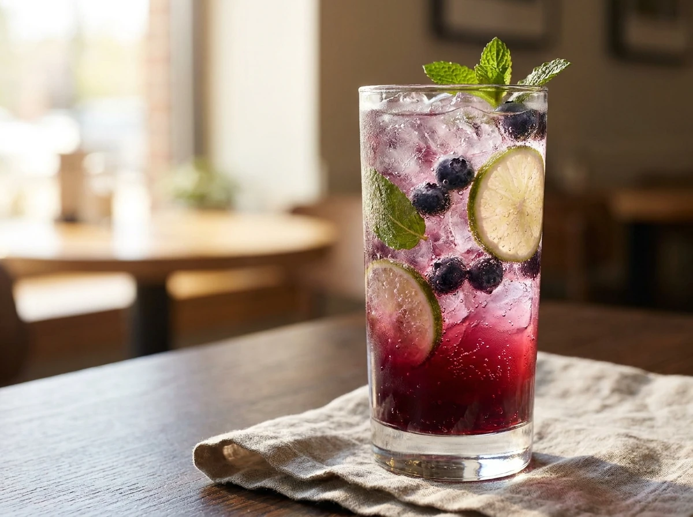

Blueberry Lime Mint Fizz

Description
A refreshing and vibrant drink made by muddling fresh blueberries, mint leaves, and zesty lime juice, then topped with ice and sparkling water. The burst of effervescent bubbles combined with the sweet-tart blueberry and cool mint creates a light and invigorating fizz, perfect for a hot day or as a palate-cleansing accompaniment to any meal.
Ingredients
- 1/4 cup blueberries.
- 8 to 10 fresh mint leaves.
- 2 to 3 teaspoons fresh lime juice.
- 1/2 cup ice or more, as desired.
- 20 ounces sparkling water.
Steps
- Evenly distribute the blueberries, mint, and lime juice at the bottom of two large glasses.
- Mash with a wooden spoon or pestle to release the flavors. (In bartending, this is called muddling.)
- Add ice to each glass and fill with the sparkling water.
- Stir gently, and add more lime or mint as needed.
- Serve immediately.